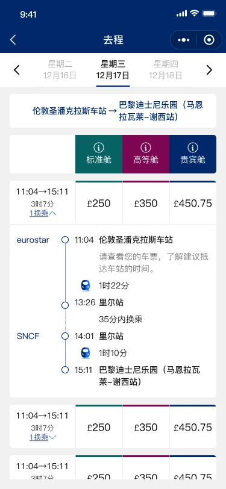
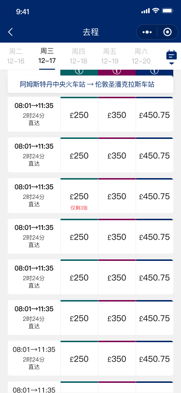

Eurostar · WeChat Mini Program
Making booking choices clearer for Eurostar
A booking flow that helps travellers make sense of stations, dates, passenger counts, and fares, from search through to ticket review.
Design examples for search, passenger setup, comparison and ticket review.


Eurostar · Booking prototype
How much time do you want to change trains in Lille?
- 11:04London St PancrasEurostar
- 13:26Lille Europe
- Time to change 35 min
- 14:01Lille EuropeSNCF
- 15:11Marne-la-Vallée–Chessy
Sample services
Change at Lille
Scroll the departures to keep the route pinned. Open the first connection, pick a later onward train, then collapse the row to compare arrival times.
Design decision
The list first answers “When do I arrive, and what does it cost?” Opening a row keeps the first leg in context. Changing the onward train updates both the wait and the overall arrival time.
What to check in a walkthrough
Select the 14:31 connection and collapse the row. Check that the summary now shows 15:41, that reopening retains the choice, and that the route remains identifiable while scrolling.
At IT Consultis, I mapped the booking journey, compared rail booking products and contributed redesign recommendations. These four proposals follow the decisions a traveller makes.
Default values
Give returning travellers a useful starting point
Every search previously started with empty fields. I proposed restoring the most recent stations and passengers and offering today or tomorrow as a starting date. First-time travellers choose their own stations, and every default stays editable.
A passenger default saves re-entry. Changing the party to an unaccompanied young traveller reveals the age requirements at that point.


Station selection
Start with the city, then identify the station
The alphabet rail gave little indication of how stations were grouped. Travellers may also know a city without knowing a station’s spelling. I proposed grouping relevant stations by country and city, alongside search.
Pairing Chinese and English names gives travellers the same wording to check against tickets and station signs.

Ticket selection
Keep the route visible while comparing trains
Pinning the route keeps the origin and destination visible as travellers scroll between services. Each row aligns times with fares by class. The review also identified missing service details and proposed showing remaining seats only below 30.
Expanding one row places both legs on the same timeline. In the prototype, choosing a later onward train keeps the London leg and changes both the time in Lille and arrival at the destination.

Switching dates and times
Swipe to nearby dates or open the calendar for a longer jump
The results page originally exposed only three fixed days. I proposed a horizontally scrollable date strip and a full calendar accessible from the date control, preserving the route while browsing another day.
For return journeys, the outbound date should remain editable. If it moves beyond the existing return, the traveller can reselect the return before reviewing both legs together.


Review both tickets before payment